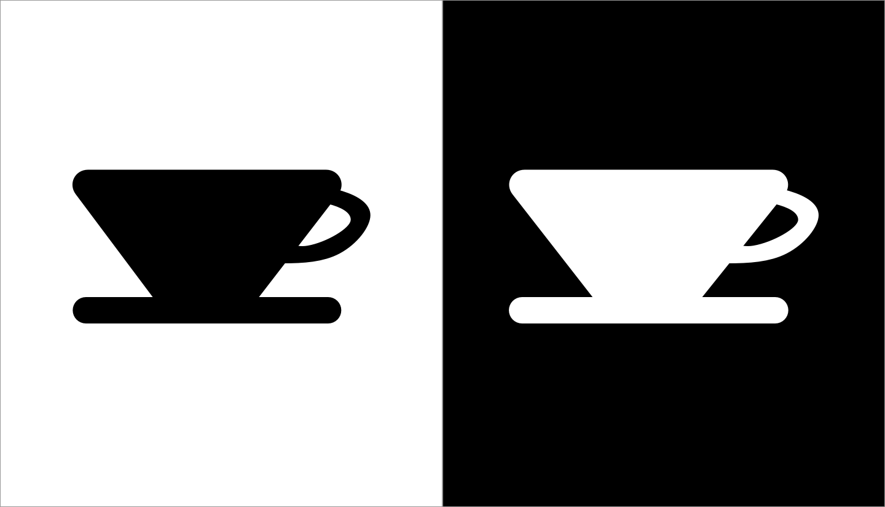
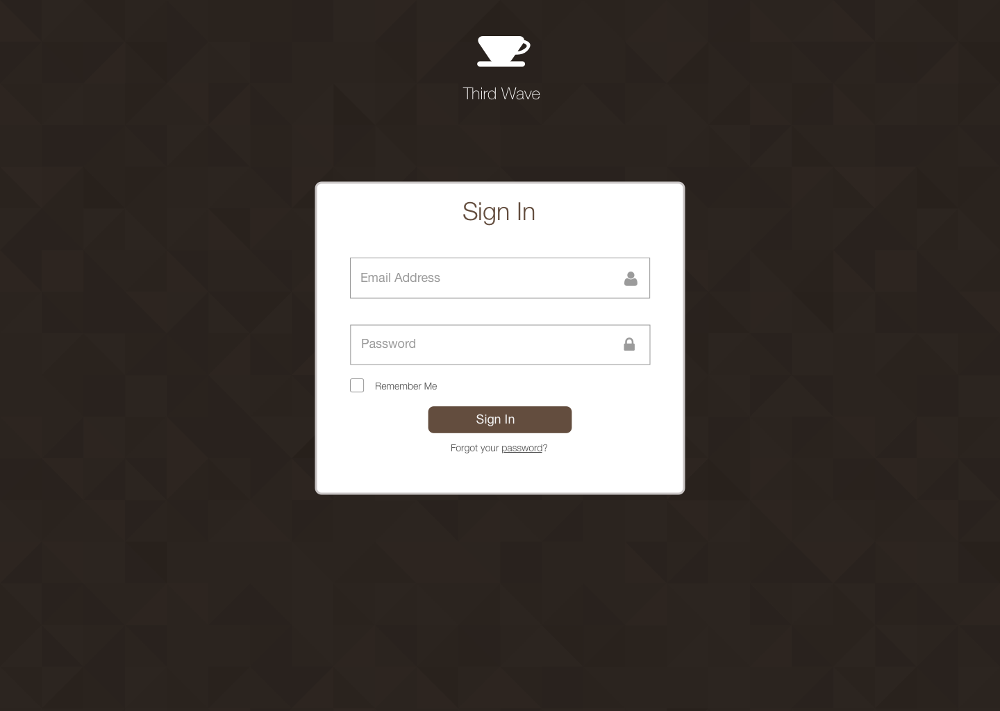
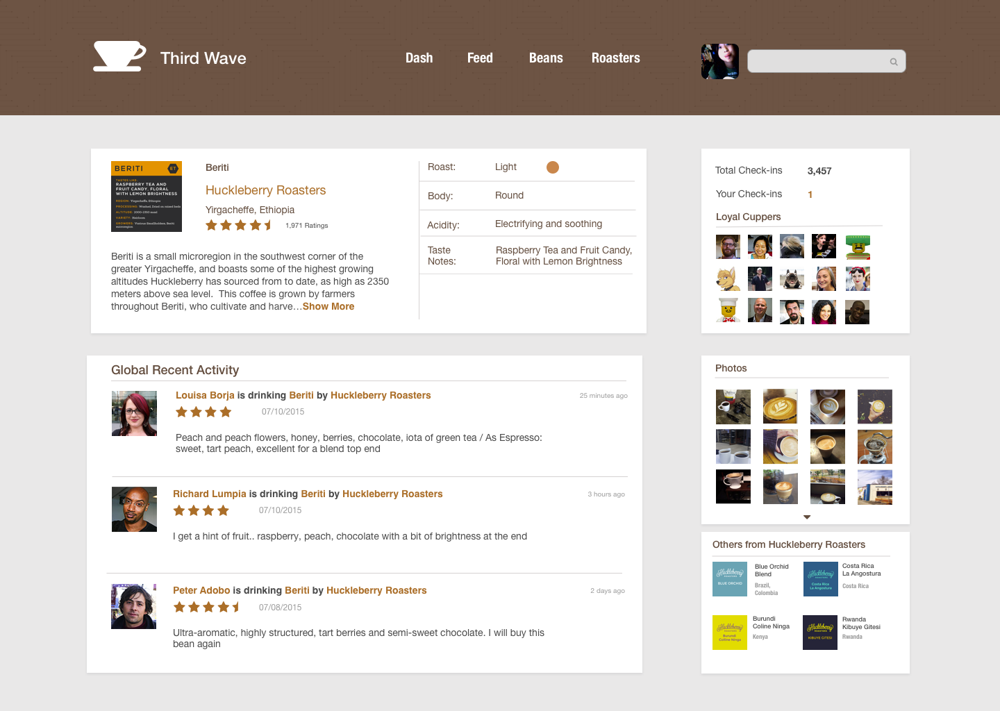
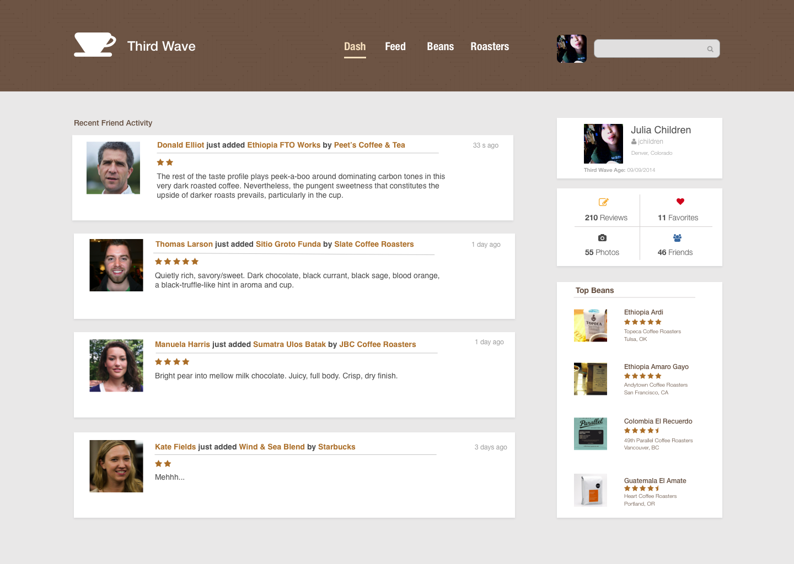

Third Wave Coffee
Sketch, Illustrator, Photoshop CS6
This is a current side project with Gabe Grazier G'Sell and I. It is meant to be a coffee bean review site. This is really useful to us, because we’re traveling the country trying different roasters and their beans. Think of this as a Untappd for Coffee. This site will be using Rails and designed by Illustrator and Sketch.
Disclaimer: work in progressHome Page
This will be a landing page for users that are not logged in. I wanted to highlight a warm cup of coffee in the hero as well as coffee beans, which quickly summarizes what our web app is about.
Third Wave Logo
I knew I wanted a pourover cone to be my logo, but the challenge was making it simple, recognizable, and able to symbolize Third Wave in all the right ways. The following are all the variations I came up with and the final choice.
My final decision landed on this version of a pourover cone.
It had all the qualities that I looked for: simplicity, recognizable, and bold.

Sign In Page

Bean Page

User Feed Page
